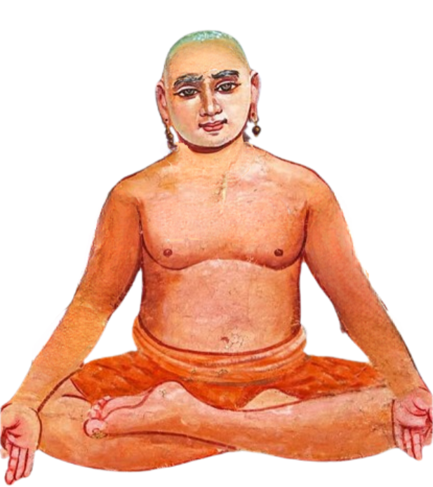

மகான் தத்துவராயர்

வள்ளலார் நம்முடைய ஆன்மா என்கின்ற சிற்றணுவுக்கு மூன்று அவத்தைகள் உள்ளதாக கூறுகிறார்.அவை நனவு😄,கனவு🙂↕️,சுழுத்தி😴 என்பவை ஆகும். இதன் வகைகள் பின்வருமாறு பிரியும்.👇👇
திரயோதசாந்தமாவது யாதெனில்:
1. ஜீவ சாக்கிரம்
2. ஜீவ சொப்பனம்
3.ஜீவ சுழுத்தி
4.நிர்மல சாக்கிரம்
5. நிர்மல சொப்பனம்
6.நிர்மல சுழுத்தி
7.பர சாக்கிரம்
8. பர சொப்பனம்
9. பர சுழுத்தி
10. குரு சாக்கிரம்
11. குரு சொப்பனம்
12. குரு சுழுத்தி
13. குரு துரியம்
14. குரு துரியாதீதம்
15. சுத்த சிவ சாக்கிரம்
16. சுத்த சிவ சொப்பனம்
17. சுத்த சிவ சுழுத்தி
18. சுத்த சிவ துரியம்
19. சுத்த சிவ துரியாதீதம்
இதில் 13ஆவது நிலையான குருதுரிய நிலையில் தான் அருட்பெருஞ்ஜோதி ஆண்டவரின் அருள் நமது மனித தேகத்தில் காரிய படும். இந்த நிலையை தத்துவராயர் என்ற மகான் அடைந்துள்ளதாக வள்ளலார் நமக்கு கூறியுள்ளார். மகான் தத்துவராயர் தாம் அடைந்த குருதுரிய நிலையை பத்து பாடல்கள் மூலம் பதிவு செய்துள்ளார்.அந்த பாடல்கள் பின்வருமாறு.👇👇
உற்றறி வெழவுள விருளகன் றதுபோ
லுதயம்வந் தெழுவுடு வொளியகன் றனவா
னற்றுட அயிர்பொரு ளப்புடன் கவர்ந்து
நாண்மலர்த் தாளிணை நாயினேற் கருளிச்
சற்றென விசுவசாக் கிரகர ணங்கள்
சதுர்த்தெச செலவுநன் கலப்பழிப் பொன்றிற்
பற்றுத றிசைமுகர் பதமென வருளப்
பரிபூர்ண னேபள்ளி யெழுந்தரு ளாயே
அண்டரும் பரமெழ வறிவகன் றதுபோ
லாதவ னெழவுடு மதியகன் றனவா
லெண்டிசை தொறுந்திரிந் தெனையறி யாதே
யெய்த்தெனை யாண்டுதை சத்தெனு மதிலே
கண்டுகொள் கனவையில் வணமென விருத்திக்
காமிய தாமதுட் காணங்க ளுடனே
பண்டுல களந்தவர் பதமென வருளப்
பரிபூர்ண னேபள்ளி யெழுந்தரு ளாயே
பத்துட னாலையும் பதைப்பற விருத்திப்
பாரிருந் திவ்வண மென்றருள் புரிய
வத்தம துருவம தாயின தென்ன
வதுமிகு சுழுத்தியவ் வியத்தமா மாயை
யுத்தம வுருத்திர பதமுநற் பிரகிர்தி
யுனதுட லாமுதற் பாழ்சகற் லட்சணை
பத்திய தறிபிரா ஜூனென வருளப்
பரிபூர்ண னேபள்ளி யெழுந்தரு ளாயே
விரிவுறு காரிய வுபாதிக ளெல்லாம்
வேறுசெய் தறிவிராட் புருடனை யெனவுங்
கரியது வாகிநின் றன்னவை முழுதுங்
கழன்றன சம்சர்க்க வாக்கிய மதனாற்
றுரியம துனையறி தொம்பத மகேசர்
சொல்லுமுற் பூரண சோதியி லென்னைப்
பரநன விற்கர மணியென வருளப்
பரிபூர்ண னேபள்ளி யெழுந்தரு ளாயே
காலமு ஞ்சதுருஞ் ஞானமு ஞேயமுங்
கண்டன னென்னி லிராசத மாயை
மேலொடு கீழ்பக்கம் விரவிய பின்முன்
விரிவுறு மவைபவ மாயின வெல்லாஞ்
சாலவு மிரணிய சர்ப்பமு மிதுதான்
சதாசிவ கால பரன்கன விதுவெப்
பாலுயர் காரண வுபாதியென் றருளப்
பரிபூர்ண னேபள்ளி யெழுந்தரு ளாயே
இதமக மறவிரு விவணமென் றருளி
யெழில்பர சுழு த்திகா ரணாதியிற் றதுவா
மதீதம திதுவசகல் லட்சணை யதனா
லாசறு சொல்லுறு பாழிரண் டாம்பாழ்
பொதுவது புகவது போந்தட மன்றிப்
போதமு மழுங்குமவ் வியாகிர்த மிறுகல்
பதியுடல் சதாசிவ பராசத்தி யருளப்
பரிபூர்ண னேபள்ளி யெழுந்தரு ளாயே
அருவமு முருவமு மாகிய பொருளே
யதீதமென் றருளிய தழித்தது வறிந்த
பொருளுணர் வதுபரம் விசிட்டவாக் கியத்தாற்
பொருவில்சிற் சுவலிதைதற் பதப்பொரு ளதுவா
மிருநில னெனமுத லருளிய பரிசே
யெழிலிரு பூரணத் தியல்குரு நனவிற்
பரமுற வெனதெழு பவமறுத் தருளப்
பரிபூர்ண னேபள்ளி யெழுந்தரு ளாயே
மலமறு குருபதக் கனவினின் மருவு
மாசறு மாணவ சாத்திக மதனா
லுலகமோ டுயிருதன் மாத்திர பரமா
யுணர்ந்தது வேப்ரசர பத்தியென் றருளி
நிலவிய பரமம தாயவை முழுது
நிகழ்ந்ததின் றெற்கென நெடியவர் முதலே
பலவுல குண்டது மிதுவென வருளப்
பரிபூர்ண னேபள்ளி யெழுந்தரு ளாயே
சீரணி சகதசகல் லட்சணை யதனாற்
செகமுழு துண்டதொர் செருக்கற மிகவே
யேர்குருசுழுத்தியி லிருத்துப சாந்த
மிருபதப் பொருளுமொன் றாக்கிநின் றொளிர
வோருட லுயிரறி யொண்பர முழுது
மொன்றுமுப் பாழுரை யிறந்திட மதுவாய்ப்
பாரியல் சமைவுநற் பிருதுவியென் றருளப்
பரிபூர்ண னேபள்ளி யெழுந்தரு ளாயே
ஆரண முடிவினி லசிபதப் பொருளை
பருளுமுப் பூரண பூணாபி ஷேகச்
சீரணி யடிகளென் சென்னியிற் சேர்த்திச்
செறிதர வகண்டவாக் கியமத னாலப்
பூரண துரியமென் மோனநல் விழியாற்
புணர்குரு சத்திய மாதியுற் பலத்தின்
பாரென நடித்துனி லயிக்கிய மாக்கு
பரிபூர்ண னேபள்ளி யெழுந்தரு ளாயே
மகான் தத்துவராயர் அடைந்த 13ஆவது குருதுரிய நிலைக்கு மேல் உள்ள அனுபவங்களான 14.குரு துரியாதீதம்,15.சுத்த சிவ சாக்கிரம்,16.சுத்த சிவ சொப்பனம்,17.சுத்த சிவ சுழுத்தி,18.சுத்த சிவ துரியம்,19.சுத்த சிவ துரியாதீதம் எல்லாம் சுத்த சன்மார்க்க சாத்தியம் என்கின்றார் வள்ளலார்.
வள்ளலார் 19ஆவது நிலையான சுத்த சிவ துரியாதீதம் அடைந்து அருட்பெருஞ்ஜோதியராக திகழ்கின்றார்.அதற்கான சான்று பாடல்கள் பின்வருமாறு.👇👇
தனிப்படும் ஓர் சுத்தசிவசாக்கிர நல் நிலையில்
தனித்திருந்தேன் சுத்தசிவ சொப்பனத்தே சார்ந்தேன்
கனிப்படுமெய்ச் சுத்தசிவ சுழுத்தியிலே களித்தேன்
கலந்துகொண்டேன் சுத்தசிவ துரியநிலை அதுவாய்ச்
செனிப்பிலதாய் எல்லாமாய் அல்லதுவாம் சுத்த
சிவதுரியா தீதத்தே சிவமயமாய் நிறைந்தேன்
இனிப்புறு சிற்சபை இறையைப் பெற்ற பரி சதனால்
இத்தனையும் பெற்றிங்கே இருக்கின்றேன் தோழி
சரி நாம் எப்படி இந்த நிலையை அடைவது 🧐? அதற்கு வழி சத்விசாரம், பரோபகாரம் ஆகும்..👇👇
சுத்த சன்மார்க்க சாதனம் 2 வகைப்படும்: பரோபகாரம், சத்விசாரம், பரோபகாரம் என்பது தேகத்தாலும், வாக்காலும், திரவியத்தாலும் உபகாரஞ் செய்வது. சத்விசாரம் என்பது நேரிடாத பக்ஷத்தில் ஆன்மநேய சம்பந்தமான தயாவிசாரத்தோடு இருப்பது. கடவுளது புகழை விசாரித்தல், ஆன்மாவின் உண்மையை விசாரித்தல், தன் சிறுமையைக் கடவுளிடத்தில் விண்ணப்பித்தல். இந்த மார்க்கத்தால்தான் சுத்தமாதி மூன்று தேகங்களைப் பெற வேண்டும்.
சிதம்பரம் இராமலிங்கம்